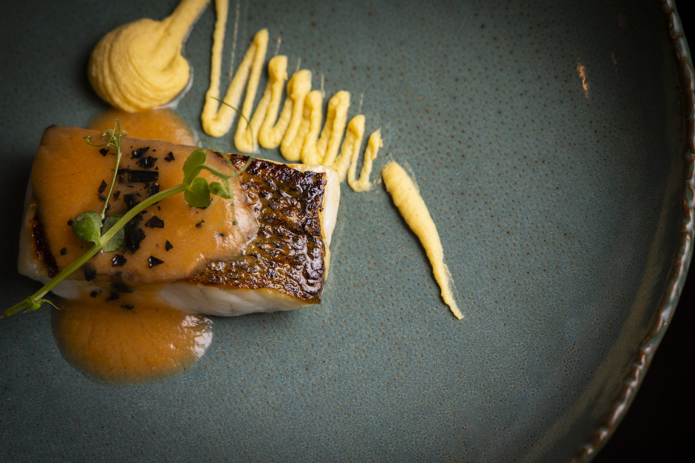

Pase 6 de 9
Sevilla
La feria de abril
Fue la puerta de un continente y es la ciudad que mejor sabe convertir una semana en una fiesta.

Bacalao con patata revolcona y tomate especiado, el pase de Sevilla.
El plato
Paseando por Sevilla en la feria de abril
Tradición de barra y de convento: bacalao, tomate y patata revolcona con técnica de hoy.
El pase de Sevilla es de barra y de convento: bacalao a baja temperatura, patata revolcona y tomate especiado. Receta de siempre, técnica de ahora.
Bacalao a baja temperatura, patata revolcona y tomate especiado.
Alérgenos pescado · huevo
La historia
El puerto de las Indias
Al lado de Sevilla está Itálica, la primera ciudad romana fundada fuera de Italia y cuna de dos emperadores. Pero su siglo fue el XVI: durante casi doscientos años, todo el comercio con América pasó obligatoriamente por su puerto fluvial. Sevilla fue, literalmente, la puerta de un continente.
Itálica la fundó Escipión el Africano en el 206 antes de Cristo, tras ganar en Ilipa, para asentar a sus soldados heridos. Es la continuación de la historia de Baecula, que se cuenta en la ficha de Jaén.
El arte
La soleá de Triana y las sevillanas
Triana es uno de los barrios fundacionales del flamenco, y de allí sale una de las formas de la soleá. Las sevillanas son otra cosa distinta: no son un palo flamenco al uso, sino un baile popular que se aprende de niño, se baila de a dos y se sabe sin haberlo estudiado nunca.
La Bienal de Flamenco de Sevilla, que se celebra cada dos años desde 1980, es la gran cita internacional del género.
El habla
Pringá
Lo que queda del cocido —carne, tocino, morcilla— deshecho y servido dentro de un montadito. Se pide al final, cuando ya no cabe nada. Y siempre cabe.
«Una pringá, y que no falte el pan».
La costumbre
La Feria
CuándoAbril
Una semana de abril en la que la ciudad entera se muda a un recinto de casetas, con su alumbrado, su rebujito y sus sevillanas. Tiene reglas no escritas que todo el mundo conoce y que nadie ha explicado nunca a nadie de fuera.
El rebujito, manzanilla con refresco de limón, corre por las casetas, y los trajes de flamenca se renuevan cada año: lunares, volantes y mantoncillo.
Las ocho, de una sentá
Sevilla es el pase número 6 del menú degustación. El recorrido entero son las ocho provincias y un homenaje final que no pertenece a ninguna.